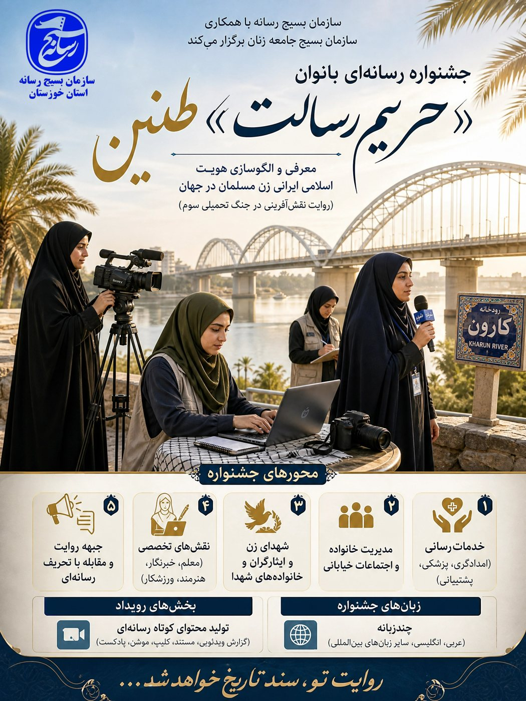
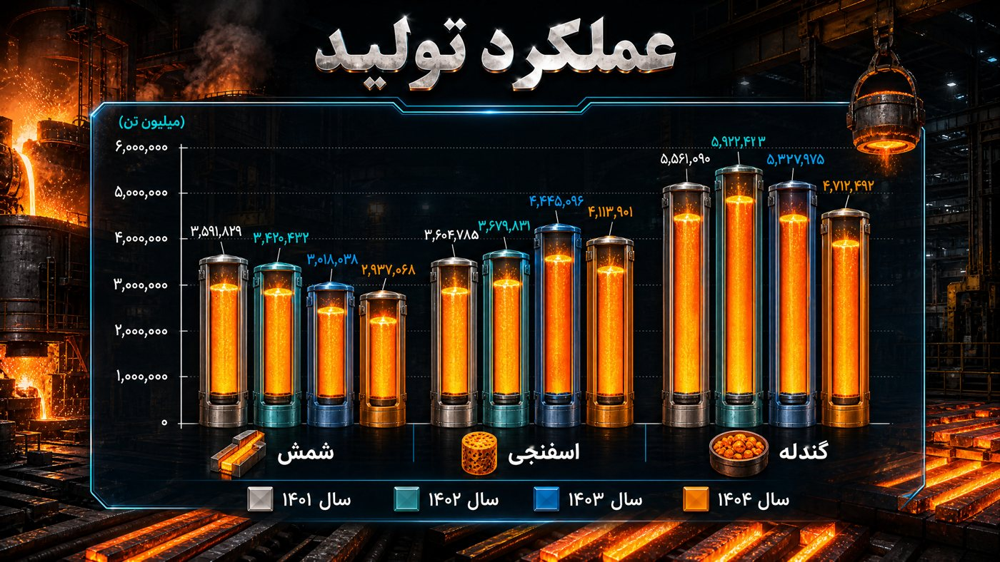
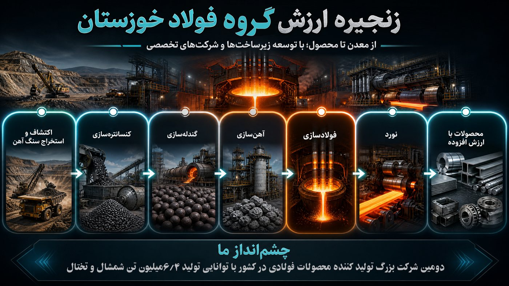

۰۳ · محتوا و بازاریابی با هوش مصنوعی
جذب مشتری،
نه فقط فالوور.
محتوای فعلی و پیج شما را بررسی میکنیم، قیف فروش و تقویم محتوا را طراحی میکنیم و با هوش مصنوعی محتوایی میسازیم که به فروش برسد.
کسبوکارهای آنلاین
برندهای در حال رشد
فروشگاهها و پیجهای اینستاگرام



- ۱بررسی محتوا و پیج فعلی
- ۲طراحی قیف فروش و تقویم محتوا
- ۳تولید محتوا با هوش مصنوعی
- ۴گزارش ماهانه و بهینهسازی
دربارهی محتوای برندم صحبت کنیم
جلسهی اول رایگان · بدون تعهد